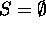
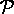
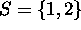
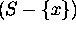
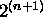

Basis Step: If n = 0, then  . Hence it has exactly one subset, namely
Induction: Assume that a set with n elements has distinct subsets. ----- Induction Hypothesis
To prove that this holds for n+1, first try to express the number of subsets of S of size n+1 in terms of that of a set of size n so that the induction hypothesis can be used. For that we use the following claim without a rigorous proof.
Claim: |  (T) | = 2 * | (S) | , if T is obtained from S by adding one more element, where (A) denotes the powerset of a set A .
Let us illustrate the basic idea of this claim with a simple example. Let  . Then the subsets of S are
The proof of the inductive step is a straightforward application of this claim.
Let S be a set with n+1 elements and let x be an arbitrary element of S. (T) denote the set of subsets of a set T .
Then a set in (S) not containing x is a member of  , and conversely, a member of is a member of (S) that does not contain x.
Also a set in (S) containing x is a member of with x and conversely, a member of plus x is a member of (S) that contains x.
Thus altogether there are twice as many sets in (S) as in . But by the induction hypothesis has elements. Hence S has  subsets.
End of Proof